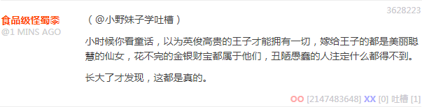

无聊图 4410427
无聊图 4410427
这其中蕴涵着充沛的政治和意识形态内容并引领了激烈的政治和意识形态斗争新动向。
简单说，与这份情报不同，原版《星战》当中的犹大形象已经众所周知了，是绿皮，类似如今奇幻背景当中的「哥布林」形象共识。而犹大的师傅恩卡塔·德尔·高莫形象则是「娜迦」。并且《星战》开头当中塔图音的取景地，就在突尼斯，当年的迦太基。所以隐喻很明显了，不需要掰开了揉碎了解读。
可以参考国际化大都市「华语第一精日论坛」出现的色目含量甚高的重要情报《美国和沙特的联盟算不算现代版渎圣同盟？》以及国际一流和谐宜居之都「高学历精英社交圈」于首页今日头条位置醒目应景推荐的色目含量甚高的重要情报《请问能否科普一下渎圣同盟的形成，历史意义和借鉴作用呢？》
总而言之，色目情报掮客不厌其烦的教导人民群众说，第六次中东战争兼第三次世界大战不可避免，伸头一刀缩头也一刀。太平日子过久了「躺赢」习惯了的豪门贵种走兽派不想打？参考前两次的情况，那就等着内爆革命吧，市面上有得是久经考验的无产阶级军事家。
补充
稍微补充一点背景，中学历史课本上语焉不详或压根没出现的原版「渎圣同盟」，是法兰西与奥特曼联手，对抗裤裆开疆的哈布斯堡胯下的奥地利－匈牙利、西班牙、南意大利。
而复刻版「渎圣同盟v2.0」或曰「第一次世界大战」，就在中学历史课本当中有了存在感了也，是德意志、奥地利－匈牙利与奥特曼联手，对抗裤裆开疆的罗曼诺夫胯下的日不落共荣圈和罗刹，法兰西意大利各挑一边站队，后来一边倒。
这次旗舰版「渎圣同盟v3.0」也差不多，一定是把床技作为家传绝学的豪门批量培养小鲜肉小白脸和花瓶碧池到处扩散体液，多年来隔岸观火，前方吃紧后方紧吃，到处拈花惹草招蜂引蝶，一炮打响就能躺赢，来得早不如来得巧，最终裤裆开疆……的君主国或伪装成国家的家族企业，都有「朕即国家我就是大局你们要顾全大局」的政治规矩和组织纪律，所以忽略境内两脚畜牲的情况下决策效率颇高，互相之间可以轻松签订「协约」，亲戚们远程视频会议喝杯茶就能搞定，各国担任「天下都招讨兵马大元帅」出头露面的都是白马王子白雪公主之类俊男美女。
而「同盟」就是其它被吟游诗人嘲笑为又土又丑又矮又胖又没有令人眼花缭乱的纹章的钦定配角龙套反派，没有话语权只能眼睁睁的看着根红苗正忠君爱国的文曲星往眼皮底下推送主旋律正能量：

裤裆协约国征兵广告
然后丑陋愚蠢的贱种们一合计，阶级矛盾压倒了民族矛盾和宗教矛盾，如果不在境内各自闹革命，就先合伙把王冠打落一地吧。